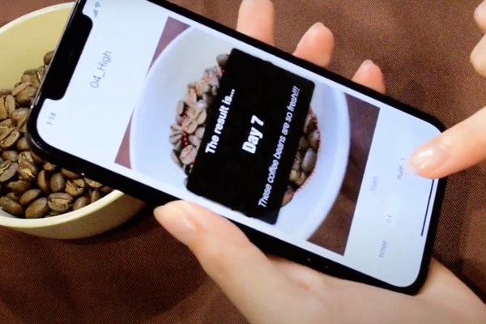
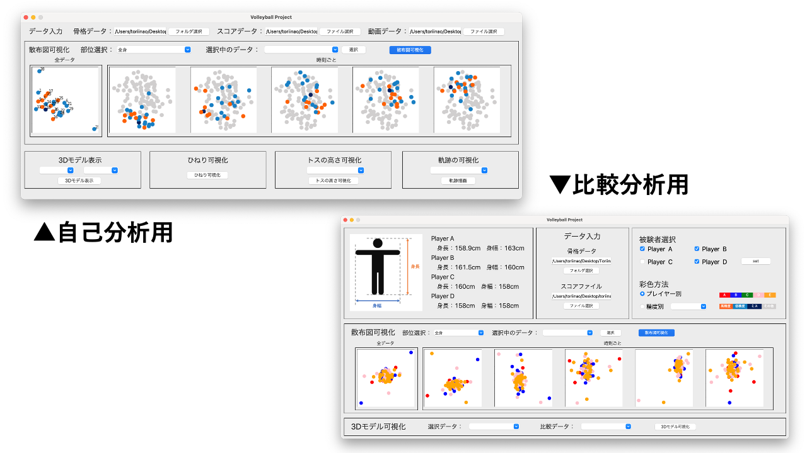
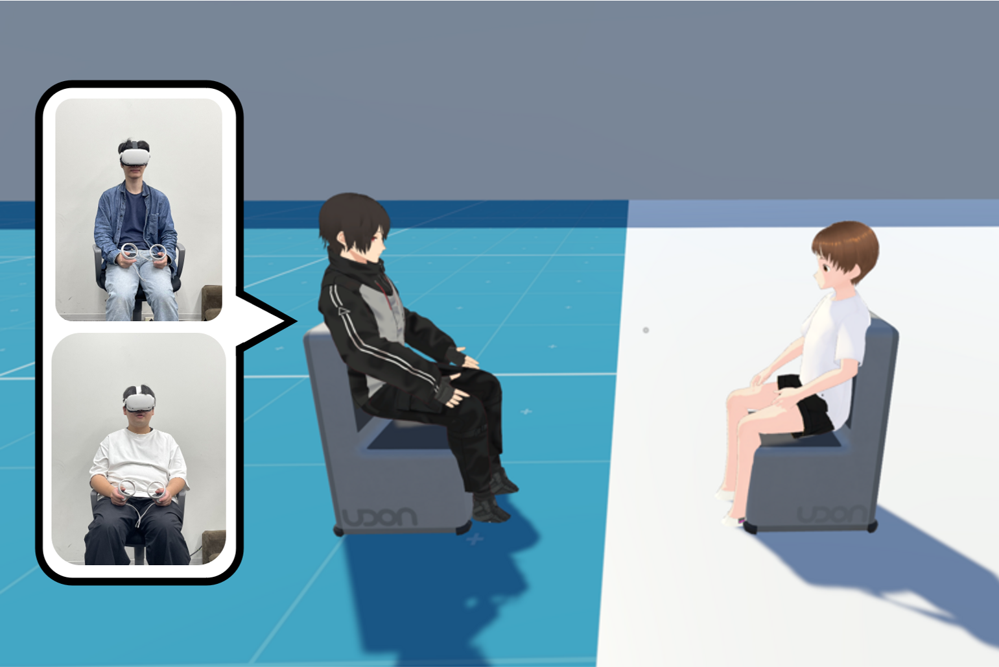
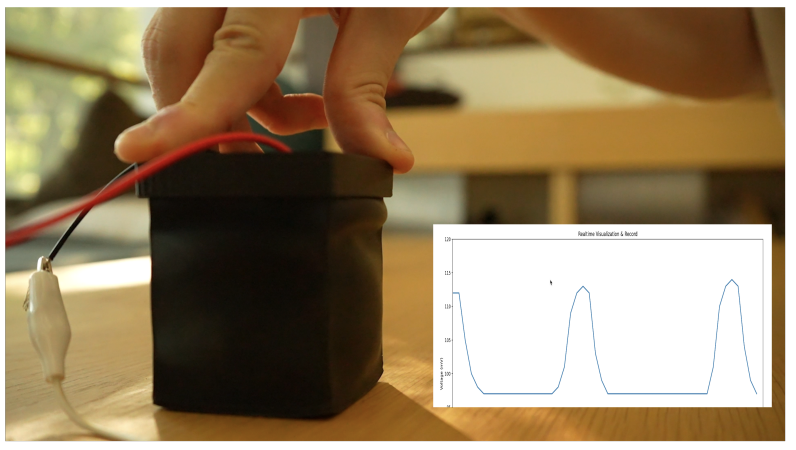
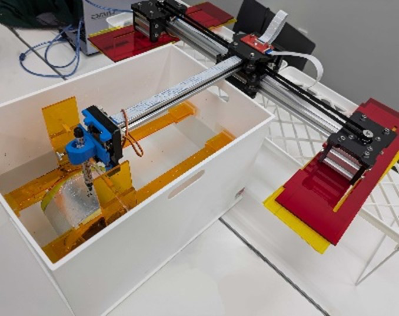

デモ発表
デモセッション1
- 日時：1日目 17:20-19:00
- 座長：鳴海 紘也（慶應大）
[1-A01] 楽器未経験者のための弦管打複合電子楽器の開発

[1-A02] ParaSights：両眼視野闘争によって2つの環境と並行してインタラクションできる空間提示手法

[1-A03] 近距離無線通信を用いた形状自在キーボードシステム
[1-A04] 物体のインタラクティブな引き抜きを可能とするための基礎検討

[1-A05] デジタル広告における広告疲労軽減のための可視化システム
[1-A06] 多義図形の知覚特性を利用したビデオゲームシステムの提案
[1-A07] 歌詞に基づく歌声アノテーションのためのインタフェース構築
[1-A08] ShapeReading: 厚みを触覚提示することで進捗を提示するデバイスの提案
[1-A09] 風船3Dプリンタの実現に向けたパウチの熱融着パターンと変形角度の調査
[1-A10] HMKとアイポインティングを組み合わせたマルチモーダルな入力手法
[1-A11] 銀ナノインク・導電転写箔の配線に対する強固なはんだ付け部品実装手法

[1-A12] チームラボ
[1-A13] フューチャー株式会社
[1-A14] 地域と連携したユーザテストを行うためのポータルサイト構築を目指したプロトタイプの実装
[1-A15] バーチャルハンドのスケール変化を用いたハンドリダイレクション手法の提案
[1-A16] LifeRhythmPlant：社会的インタラクションの促進に向けた生活リズムを反映する分身植物

[1-A17] ASMR動画に合わせて撫でられる感覚を提示するシステムASSADSの実装
[1-A18] 緊張感緩和を目的とした自己鏡映像との対話システムTalk To MEの提案

[1-A19] PTTV：粉末混合式の味ディスプレイ
[1-A20] Opticuisine: 光学レンズ食品のための画像印刷手法
[1-A21] ESCAFE: スマートフォンのフラッシュを利用した表面油分の強調によるコーヒー豆の鮮度推定

[1-A22] オノマトペを用いた脳波制御訓練手法による魔法ゲームシステム

[1-B01] BONSAI STUDIO 株式会社
[1-B02] 株式会社Helpfeel
[1-B03] Whisphone: ささやき声で入力できるイヤホン

[1-B04] SlimeMolder：粘菌を観察しながら育む粘菌ファブリケーションシステムの提案

[1-B05] スマホ1台での撮影によるピアノのジェスチャー演奏
[1-B06] 西洋絵画における作者の影響関係を可視化するユーザインタフェース
[1-B07] JumpLab 3D: 3Dゲームを対象としたカメラビヘイビアについての学習教材の開発
[1-B08] 視覚障害者の探索を支援する事前準備した地図を必要としない案内ロボット
[1-B09] バレーボールのサーブ姿勢と精度の可視化による練習支援

[1-B10] 弱学習器間の関係性に着目したアンサンブルモデルの可視化
[1-B11] LensTouch+: スマートグラスのレンズ面を使った入力手法の拡張
[1-B12] インソール型センサによる荷物負荷時の歩行姿勢フィードバックシステム
[1-B13] ぼかしを用いた視線誘導による技能獲得支援の検討
[1-B14] SkiExARGame: 拡張現実を用いたアルペンスキーエクサゲーム
[1-B15] 球面ディスプレイを用いたオンラインショッピングシステム
[1-B16] 3Dプリンタ未経験者の理解と利用意欲を高めるためのLithophane造形システム
[1-B17] MR流体を用いて形状と硬さを動的に提示する触覚デバイスの提案
[1-B18] LaserBendにおける設計支援ソフトウェアの開発
[1-B19] ダミーターゲットの表示によるポインティングの所要時間の調整と百人一首かるたのスキル差の調整への応用
[1-B20] タイムラインの考え方を取り入れたサウンドインタラクションシステムの開発環境
[1-B21] 壁面を移動可能な小型ロボットによる動的な光演出
[1-B22] 高速投影と PDLC を用いた選択的情報提示
[1-B23] 即興的な身体表現を引き出すインタラクティブなデジタル教科書
デモセッション2
- 日時：2日目 16:05-17:45
- 座長：渡邉 拓貴（はこだて未来大）
[2-A01] ブレイキンDJ楽曲可視化システム
[2-A02] 不可能立体を立体視環境で透視投影を用いて可視化するシステム
[2-A03] 他人のペットにアクションしてくれるバーチャルペット
[2-A04] 眼鏡の鼻あてに搭載した圧力センサを用いた耳ぴく入力と身体活動検出手法
[2-A05] 残像効果を用いた高リフレッシュレートLCDによる視覚効果の検証
[2-A06] ソーシャルVRにおけるモーションキャプチャとプロシージャル制御の融合による一対多身体インタラクション手法
[2-A07] 装着者の声だけを騒音環境でも利用可能にするフレキシブルマイク
[2-A08] PP-Checker: プログラミング教育における大規模言語モデルと協調した曖昧性のある自動採点システム
[2-A09] 人流シミュレーションの3次元空間における時系列可視化
[2-A10] RAGを活用した研究アイデア発想支援システム

[2-A11] 母音，子音の順に選択を行う間接タッチ用かな文字入力手法

[2-A12] STORES 株式会社
[2-A13] 株式会社TwoGate
[2-A14] VRにおける立体図形問題用作図ツールの提案
[2-A15] VR空間でのChatGPTを用いたリアルタイム話題要約システム
[2-A16] ボタンひとつで3Dプリントが体験できるシステムの提案と運用
[2-A17] 教育専門家による認可保育所の評判分析のための可視化

[2-A18] オノマトペの内言における語形の違いがBCIパフォーマンスに与える影響
[2-A19] イヤホン型BCIにおけるオノマトペを用いた脳波制御訓練手法
[2-A20] わたあめディスプレイの開発

[2-A21] TTTV4：一口ごとに味を提示する味覚のパーソナルメディア

[2-A22] 振動付与・音再生・流量変化によって飲料の過剰摂取を防止するスマートストロー
[2-A23] ネットワーク構成を改良したPoseSynthによる融合身体の試作体験
[2-B01] 株式会社ほぼ日
[2-B02] 株式会社 数理設計研究所
[2-B03] MagElePaint: 多様な素材に簡単に回路プロトタイピングが可能な磁性導電性塗料

[2-B04] 矩形選択によるユーザの選好を反映したParallel Coordinate Plots:人流シミュレーションでの適用事例
[2-B05] 人体3Dモデルをオフセットして自動生成したTシャツの3Dプリント手法
[2-B06] 透視投影を考慮した単眼カメラからの全身・手関節３次元推定再考
[2-B07] E-String Figures: 導電繊維編み込み紐を用いたあやとり技認識システム
[2-B08] 折紙構造を用いた自走式・形態変化パーティションデバイス
[2-B09] 啓巻：微細な筋肉の震えを計測する軽量な圧電デバイス
[2-B10] CronUS
[2-B11] Gino .Baseball: 時空間歪曲を用いた野球の捕球技術習得ソフトウェアの提案
[2-B12] GazeTiling: 注視位置と場面の時系列変化を同時に可視化する視線分析ツール
[2-B13] VR コンテンツにおける振動提示を伴ったスライム系モンスターとのインタラクションについての基礎検討
[2-B14] AIによる質問を利用したメール返信支援システムの評価
[2-B15] 複雑な対象を推測が容易に表現するための漢字構造を用いたアイコン作成手法の提案
[2-B16] ヤマハ株式会社
[2-B17] VR空間における粘着シミュレーションを用いたバーチャルオブジェクトの操作手法の提案
[2-B18] 導電性／強磁性を併せ持つ毛状の入力インタフェースの提案
[2-B19] ハンドヘルド円筒面タッチインタフェースの提案
[2-B20] HidEye：片目を隠す動作によるHMD用インタラクション手法の提案

[2-B21] Deliberate Maladjustment by Microorganisms: A Medium for Images or Luminous Bacteria
[2-B22] ミストへのプロジェクションマッピングを用いた生け花演出手法の提案
デモセッション3
- 日時：3日目 09:30-11:10
- 座長：高橋 治輝（立命館大）
[3-A01] 一般ユーザ向けの機械学習開発体験イベントにおける小型デバイスの効果検証
[3-A02] 融合身体を用いた一対多コミュニケーションの発話権交代の調査

[3-A03] HMDを利用したVR環境において通知の重要度に応じて通知領域を動的に変更する手法の検討
[3-A04] 制約付き近傍クラスタリングを用いた人流データの可視化手法
[3-A05] P3VS：野球の視聴体験を向上させるための配球可視化アプリケーション

[3-A06] SoilSense: 土壌微生物燃料電池を活用したリアルタイム力覚フィードバックインタフェースの実現

[3-A07] MoodGroove: テキストと身体動作による対話型音楽生成・編集システム
[3-A08] SorToio: 小型群ロボットを用いたアルゴリズム学習支援システムの提案

[3-A09] ボタン自体をさりげなく駆動させる情報提示手法の提案
[3-A10] ディスプレイキューブの連携による形状可変UIシステム
[3-A11] TouchFence: 接触箇所の検出が可能な電気柵
[3-A12] InverseVis: 疎な領域へのサンプリング点生成による多次元データ中の「非存在」の可視化
[3-A13] ShowMe: 対話的な強調表示と拡大表示によるプレゼンテーションビデオの視覚的アクセシビリティの改善

[3-A14] 物理的 UI を用いた一般ユーザーのLLM活用促進手法の提案

[3-A15] EchoAssist: サッカード侵入を用いた認知負荷推定による聞き逃し補完システムの提案
[3-A16] ボクシングのパンチの打ち込みを体感可能なVRデバイスの開発
[3-A17] VR空間における視線キューおよび身体配置の可視化による会話の生起支援
[3-A18] 触覚刺激が言語音の主観的音量の知覚に与える影響の検証
[3-A19] 運動イメージベースのBCIを用いたVR環境における四本腕制御システム
[3-A20] BCIを用いた感情分類による感情的な擬似発声システム
[3-A21] RemoteWalker：遠隔ユーザー間で対称に歩行体験を共有するシステム
[3-A22] センサによるシャトルすくい練習支援システム
[3-B01] ゲームを用いた自動点眼システムの実装と検討
[3-B02] Floatink: ホワイトボードマーカーのインクの浮上性を利用した水面ディスプレイの提案

[3-B03] 曲面の4Dプリントに向けたドットパターンの収縮率の調査
[3-B04] Enhancing Non-Dominant Hand Skills Through Inverted Visual Feedback in a Mixed Reality Environment
[3-B05] 単語の肯定度合いを可視化するワードクラウドを用いた議論の促進
[3-B06] 教育者の動作を基にしたEMSフィードバックによるドラム学習支援
[3-B07] スクロール速度に応じた段階的要約による文書提示手法の提案
[3-B08] リズムゲームを応用した視線誘導システム
[3-B09] 聴覚障がい者向けの地声で対話するコミュニケーションツールの検討
[3-B10] Emo-pathy：寄り添いインタラクションによる心理的健康促進システム
[3-B11] あアラウド法における機械学習を用いた感情観測の初期検討
[3-B12] 複数の歩行軌跡に基づくGPSアートを用いた歩行促進アプリの提案
[3-B13] スポーツにおける緊張感の再現に向けたHMDを用いた内受容感覚の誇張フィードバックに関する基礎検討
[3-B14] 動的に画面の傾斜を変化させるスマートフォン用インタフェースの開発

[3-B15] 入力途中の文字列をリアルタイム共有する同期的なグループチャットシステム
[3-B16] 匂いを用いて聴衆の反応を共有するプレゼンテーション支援システムOdorReaction
[3-B17] SounDary-Space:“音響的な境界”を提示可能な，新たな音響空間体験の確立に向けた開発と検討

[3-B18] 技術・家庭科共有プログラミング教材を用いた出前授業におけるロボットインタラクション
[3-B19] 気がかりの少ない多人数テキストコミュニケーションツールの設計検討
[3-B20] ダンスパフォーマンスにおける呼吸リズムのリアルタイム可視化システム
[3-B21] 身体動作選択的なエフェクト提示のための高速プロジェクタの投影パターンの検討
[3-B22] 机上に投影した空中立体映像による方向指示の精度調査
[3-B23] 傘を用いたデジタルサイネージにおけるインタラクションの検討
著者の方へ：ウェブプログラム掲載用のデータの提出・差替を希望する場合はウェブ担当 2024web@wiss.orgへ連絡をお願いします。書誌情報（著者・タイトル等）にかかる変更を希望する場合はプログラム委員長 2024@wiss.org へ連絡をお願いします。